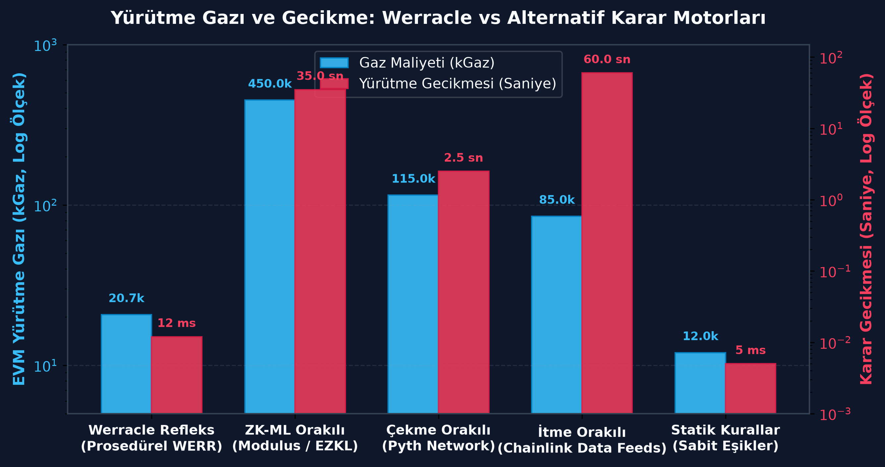
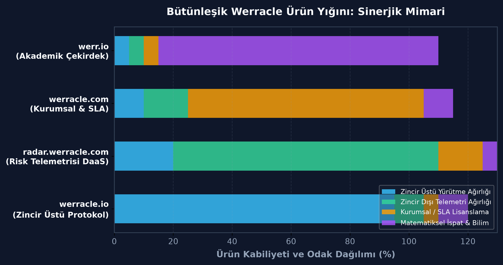
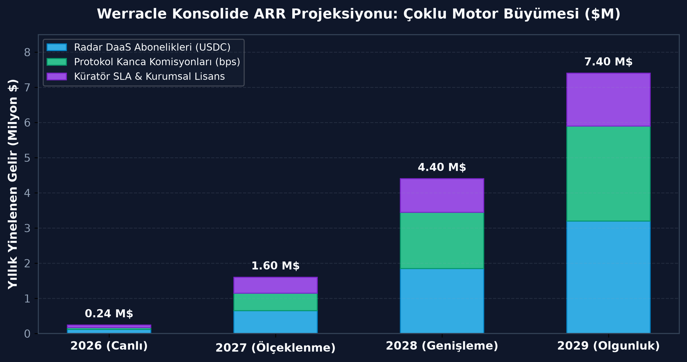
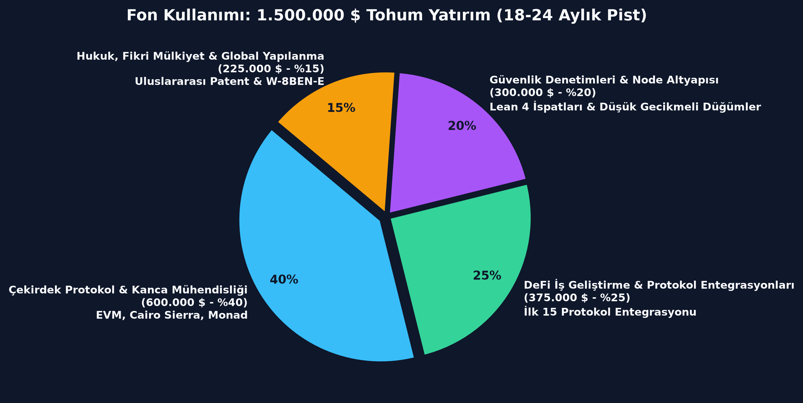

Blok-içi sınıflandırma başına sent altı maliyet (<0,001 $)
Sıfır VRAM/DRAM ağırlığı. Tek bir bytes32 depolama yuvası
Senkron yürütme flaş kredileri işlem bitmeden durdurur
38 doğrulanmış Morpho, Aave ve Euler pazarında canlı
| Gaz Tüketimi | 20.700 Gaz (solc 0.8.20) |
| Starknet CairoVM | ~1.420 Adım (STARK-Native) |
| Depolama Ayak İzi | 1 x bytes32 (EVM) / felt252 (Cairo) |
| Sabit Nokta Hassasiyeti | Q16.16 Aritmetiği (Taşma Yok) |
| Karar Hızı | 9,3 ms Motor / <12 ms RPC |
| Patent Başvurusu | TÜRKPATENT TR 2026/016285 |

Morpho Blue, Aave v3, Euler v2 (45 listelenmemiş/sentetik spam pazar filtrelendi)
68.735 aktif borçlu pozisyonu gerçek zamanlı izleniyor
Base üzerinde 190,5 bin $'lık brüt teşvikin 179,8 bin $'ı mevduat sahiplerine döndü
L1'deki 22 büyük tasfiye 366,1 bin $'lık builder rüşvetinin 351,3 bin $'ını kapsar


Küresel DeFi protokolleri ve kredi kasalarındaki kilitli toplam sermaye
MEV ve flaş kredi riskine maruz kalan borç verme ve DEX likiditesi
Orakıllar, risk denetimleri ve telemetri araçları için yıllık küresel harcama
Aurora testnet'te sözleşmeler canlı; Base L2 üretim telemetrisi aktif; Starknet Cairo 2.8 Sierra kod tabanı hazır.
Steakhouse Financial, Gauntlet ve Re7 Capital risk masaları için aktif pilot deneme anahtarları tanımlandı.
TÜRKPATENT TR 2026/016285 tescillendi; akademik monografiler yayımlandı; Teknokent Ar-Ge onayı ve Base adaylığı hazır.

Tarayıcı Simülatörü & Uniswap v4 Kancası
Canlı API & 2,20 Milyar $ Borç Gözlemevi
Lisanslama & Kurumsal Küratör SLA'sı
Volkan Dağlı, CTO & Kurucu Ortak